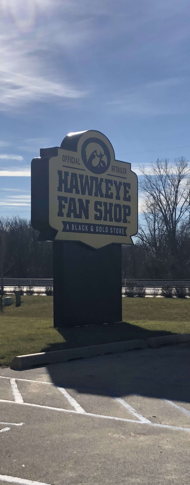
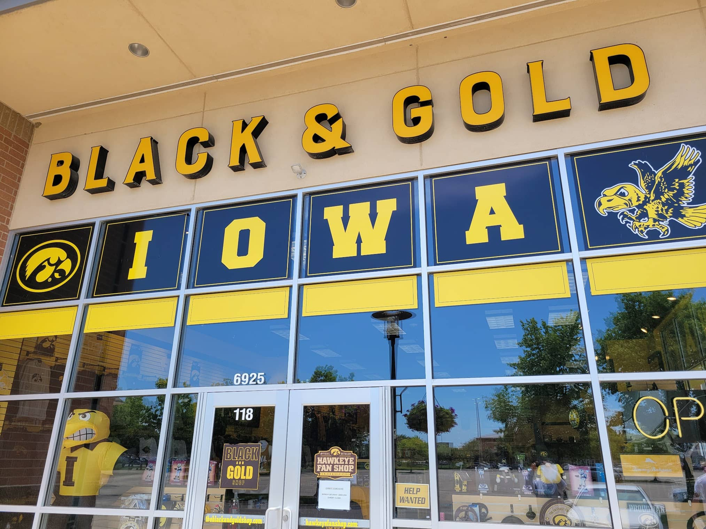
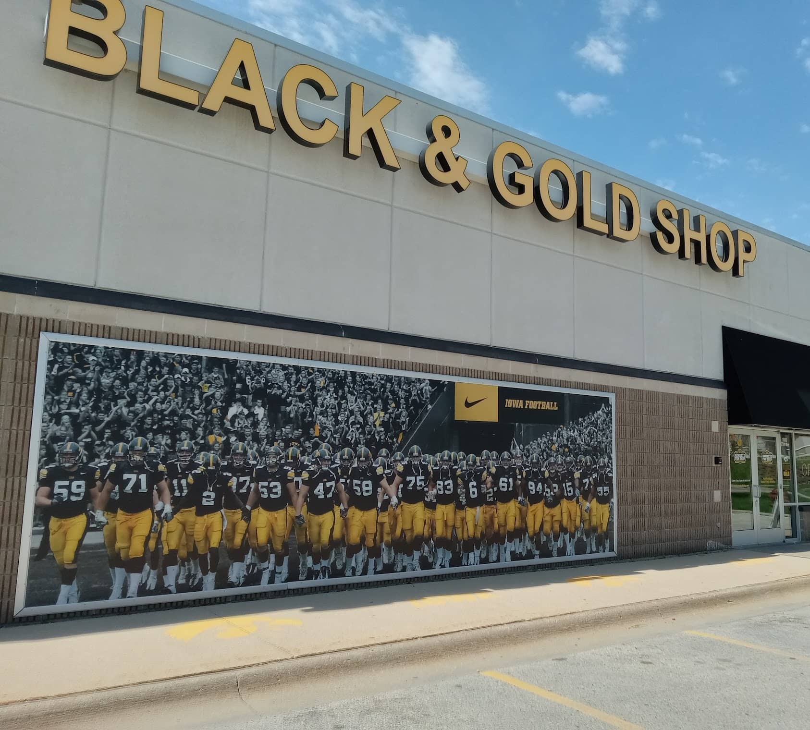
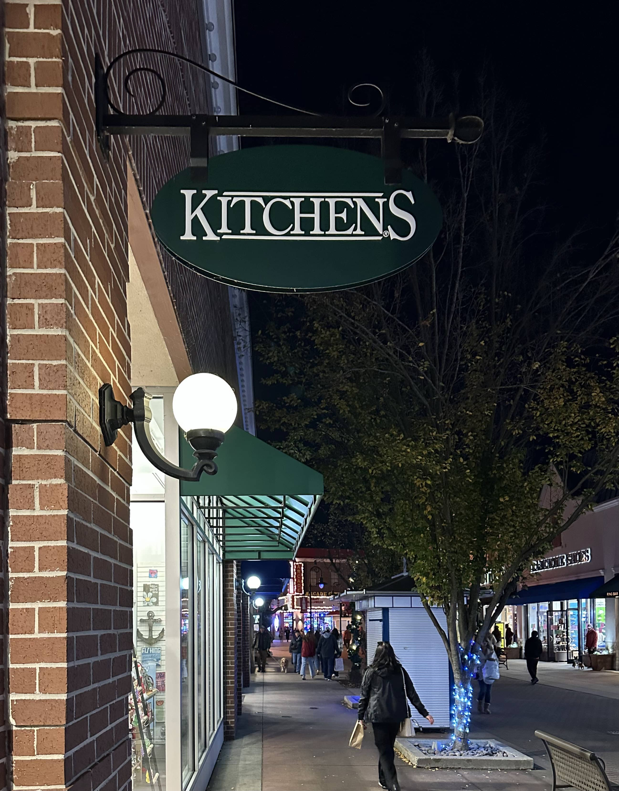

Case Studies
Explore real-world examples of analytics modernization, digital infrastructure improvements, data pipelines, and custom digital solutions designed to create measurable business outcomes. For the technical breakdowns behind this kind of work, see the Field Notes archive.
Hawkeye Fan Shop - The Official University of Iowa Athletic Department

Analytics & Data Intelligence
Web & Digital
Optimization
Advertising & Media Buying
Additional Case Studies




